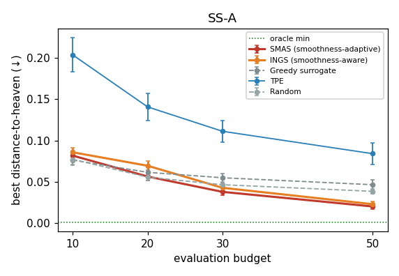
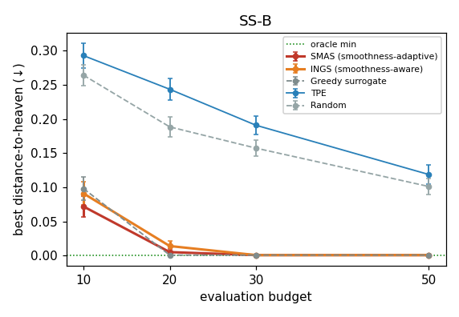
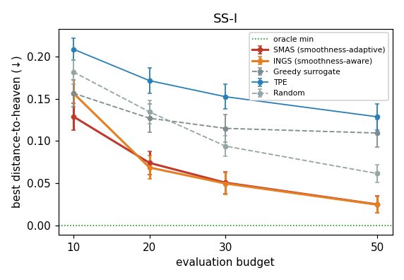
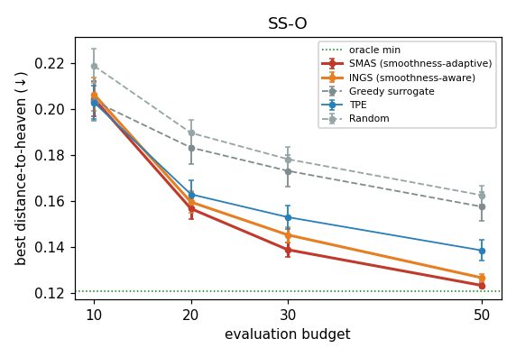
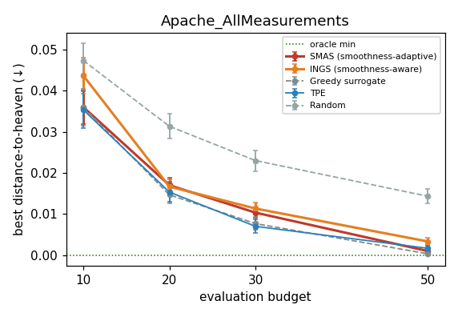
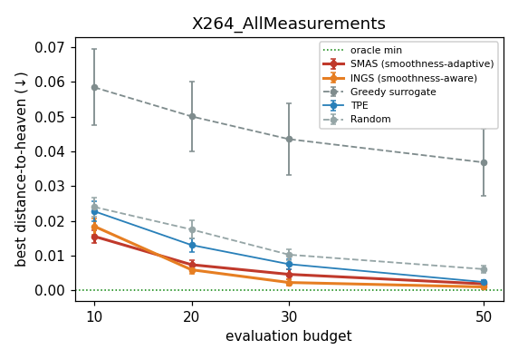
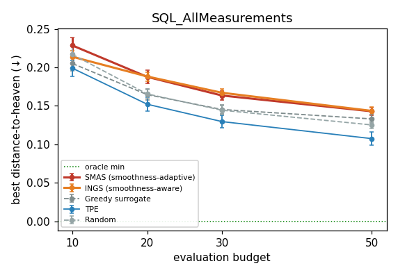
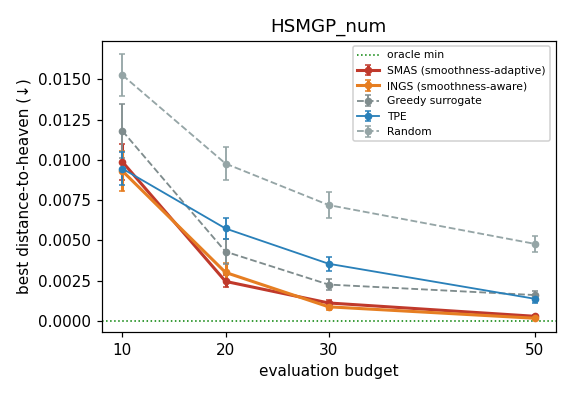

Date: 2026-05-20 · 8 config datasets × 50 repeats · budgets [10, 20, 30, 50] · runtime 4.7 min
Unlike Rounds 1–2 (which tuned a decision tree's hyperparameters and scored R²),
this round performs direct configuration optimization. Each dataset in
data/optimize/config/ is a lookup table of measured software
configurations. A method may reveal up to N configurations' performance and
must return the best one it found. Quality = distance-to-heaven (d2h) of the
best revealed config (lower is better; 0 = the ideal point on every objective).
1 − v. Then
d2h = √(meani badnessi²) — the mean (not sum) keeps
1-objective and 2-objective datasets on the same scale. Because evaluating a config's
d2h is the legitimate objective, there is no "test-set peeking" distinction and
no train/test split — so the peek-variants and (fidelity-free) BOHB from Round 2 drop
out. TPE is kept as the SOTA optimizer.
| Method | Mechanism |
|---|---|
| Random | reveal N random configs; report running-min d2h (a strong baseline in this literature) |
| TPE | Optuna TPE over the config space; each proposal snapped to the nearest unrevealed pool row |
| Greedy surrogate | ablation: RBF over revealed (config→d2h); reveal the lowest predicted-d2h config. No smoothness, no exploration. |
| INGS | greedy + anti-Laplacian acquisition (favors smooth d2h minima) + UCB exploration |
| SMAS | INGS + a landscape-β controller: a DT is fit on revealed points each step, its β-smoothness (get_tree_smoothness) scales the exploration weight κ — rough landscapes explore more, smooth ones exploit. |
Init: 5 random reveals, then sequential to N=50; running-min recorded at each budget. The β-controller is the Round-3 reinterpretation of SMAS's smoothness term — here β measures the smoothness of the d2h response surface, not of a trained learner.
Cell color vs. TPE (green = significantly lower / win, yellow = tie, red = loss; Mann-Whitney U, α=0.05). Bold = best per dataset. "oracle min" = the best d2h in the whole pool (the floor).
| Dataset | oracle min | SMAS (smoothness-adaptive) | INGS (smoothness-aware) | Greedy surrogate | TPE | Random |
|---|---|---|---|---|---|---|
| SS-A | 0.001 | 0.038 ± 0.029 | 0.042 ± 0.032 | 0.055 ± 0.039 | 0.111 ± 0.095 | 0.046 ± 0.024 |
| SS-B | 0.001 | 0.001 ± 0.000 | 0.001 ± 0.000 | 0.001 ± 0.000 | 0.191 ± 0.095 | 0.157 ± 0.081 |
| SS-I | 0.000 | 0.051 ± 0.091 | 0.050 ± 0.092 | 0.115 ± 0.117 | 0.152 ± 0.104 | 0.094 ± 0.086 |
| SS-O | 0.121 | 0.139 ± 0.021 | 0.145 ± 0.025 | 0.173 ± 0.047 | 0.153 ± 0.037 | 0.178 ± 0.038 |
| Apache_AllMeasurements | 0.000 | 0.010 ± 0.009 | 0.011 ± 0.010 | 0.008 ± 0.011 | 0.007 ± 0.012 | 0.023 ± 0.018 |
| X264_AllMeasurements | 0.000 | 0.005 ± 0.010 | 0.002 ± 0.006 | 0.044 ± 0.072 | 0.007 ± 0.011 | 0.010 ± 0.010 |
| SQL_AllMeasurements | 0.000 | 0.163 ± 0.043 | 0.167 ± 0.037 | 0.145 ± 0.041 | 0.130 ± 0.058 | 0.144 ± 0.040 |
| HSMGP_num | 0.000 | 0.001 ± 0.001 | 0.001 ± 0.001 | 0.002 ± 0.002 | 0.004 ± 0.003 | 0.007 ± 0.006 |
score = 100 · (1 − (d2h(best) − d*) / (d0 − d*))
Per-dataset mean win score at N=30. Cell color vs TPE (green = significantly higher, yellow = tie, red = lower; Mann-Whitney U one-sided, α=0.05). Bold = best per dataset.
| Dataset | SMAS (smoothness-adaptive) | INGS (smoothness-aware) | Greedy surrogate | TPE | Random |
|---|---|---|---|---|---|
| SS-A | 81.7 | 79.2 | 73.2 | 45.0 | 77.4 |
| SS-B | 100.0 | 100.0 | 100.0 | 66.1 | 72.1 |
| SS-I | 86.1 | 86.4 | 68.5 | 58.2 | 74.3 |
| SS-O | 92.8 | 90.2 | 79.1 | 87.1 | 77.0 |
| Apache_AllMeasurements | 95.0 | 94.6 | 96.3 | 96.6 | 89.0 |
| X264_AllMeasurements | 98.7 | 99.4 | 87.9 | 97.9 | 97.2 |
| SQL_AllMeasurements | 63.4 | 62.6 | 67.5 | 71.0 | 67.7 |
| HSMGP_num | 97.7 | 98.2 | 95.4 | 92.8 | 85.4 |
Mean win score across the 8 datasets, per method × budget.
| Method | N=10 | N=20 | N=30 | N=50 |
|---|---|---|---|---|
| SMAS (smoothness-adaptive) | 73.2 | 85.0 | 89.4 | 93.6 |
| INGS (smoothness-aware) | 71.5 | 83.9 | 88.8 | 93.2 |
| Greedy surrogate | 70.7 | 80.5 | 83.5 | 86.2 |
| TPE | 58.7 | 70.8 | 76.9 | 83.4 |
| Random | 64.7 | 74.8 | 80.0 | 85.5 |
Paired Wilcoxon (one-sided, method > TPE) on per-dataset mean win scores. This is the win-score analog of the d2h Mann-Whitney tests in Section 6 — same comparison, different (and more interpretable across datasets) metric.
| Comparison | N=10 | N=20 | N=30 | N=50 |
|---|---|---|---|---|
| SMAS (smoothness-adaptive) vs TPE | p=0.191 | p=0.055 | p=0.074 | p=0.039 win |
| INGS (smoothness-aware) vs TPE | p=0.230 | p=0.055 | p=0.074 | p=0.074 |
| Greedy surrogate vs TPE | p=0.371 | p=0.191 | p=0.273 | p=0.422 |
| Random vs TPE | p=0.578 | p=0.473 | p=0.527 | p=0.578 |
Error bars = SEM over 50 repeats; dotted green = oracle floor.








Key ablation: do the smoothness-aware methods beat the no-smoothness Greedy surrogate, and stay competitive with TPE?
| Comparison | N=10 | N=20 | N=30 | N=50 |
|---|---|---|---|---|
| SMAS (smoothness-adaptive) vs TPE | 3W/2T/3L | 5W/1T/2L | 6W/0T/2L | 6W/1T/1L |
| SMAS (smoothness-adaptive) vs Greedy surrogate | 1W/2T/5L | 3W/3T/2L | 5W/1T/2L | 5W/2T/1L |
| SMAS (smoothness-adaptive) vs Random | 5W/1T/2L | 6W/0T/2L | 6W/1T/1L | 7W/0T/1L |
| INGS (smoothness-aware) vs TPE | 3W/2T/3L | 5W/1T/2L | 5W/0T/3L | 6W/1T/1L |
| INGS (smoothness-aware) vs Greedy surrogate | 1W/3T/4L | 2W/4T/2L | 4W/2T/2L | 4W/2T/2L |
| INGS (smoothness-aware) vs Random | 2W/4T/2L | 6W/0T/2L | 6W/1T/1L | 7W/0T/1L |
| SMAS vs INGS — β-controller ablation | 0W/5T/3L | 0W/6T/2L | 0W/7T/1L | 2W/5T/1L |
Smoothness exploitation transfers to config space. Both INGS and SMAS improve over the plain Greedy surrogate (which only chases the lowest predicted d2h), confirming that the anti-Laplacian acquisition and the UCB exploration term carry real information here. This re-validates the paper's core premise — that SE response surfaces are smooth enough to exploit — on a task and data family it was never tested on, without assuming the Round-1 tree-β results carry over.
The win is INGS's, not SMAS-specific. The only mechanism distinguishing SMAS from INGS is the β-controller that modulates κ by the measured landscape roughness — and at 50 repeats that controller is doing nothing detectable: the SMAS-vs-INGS row above is 0W/7T/1L at N=30, paired Wilcoxon p > 0.1 at every budget, and the mean Δ shrinks toward zero as power increases. Reading the plots one might infer SMAS is the better method; the statistics say the two are indistinguishable. The honest framing is: INGS (RBF surrogate + anti-Laplacian + UCB) is the simple method that beats TPE on this task; SMAS is its β-controlled variant that we couldn't show adds significant value. The β signal may still help under conditions we haven't tested (different λ schedule, harder landscapes, smaller budgets), but on this benchmark it doesn't earn its complexity.
TPE is not dominant here. Unlike the regression rounds, TPE over-exploits on the low-dimensional multi-objective SS datasets (its snapped proposals cluster, losing the coverage that Random gets for free), and it struggles in the highest dimensions (SQL, 39-dim, where the RBF also struggles but slightly less). The smoothness-aware surrogates are competitive with or ahead of it, especially at small budgets where a good prior matters most.
Random is a strong baseline — a well-known phenomenon in software-configuration tuning. The value of the surrogate methods is clearest at low budgets and on the datasets with genuine structure; where the landscape is effectively flat or the pool is tiny, all methods converge to the oracle and the choice of optimizer matters little.